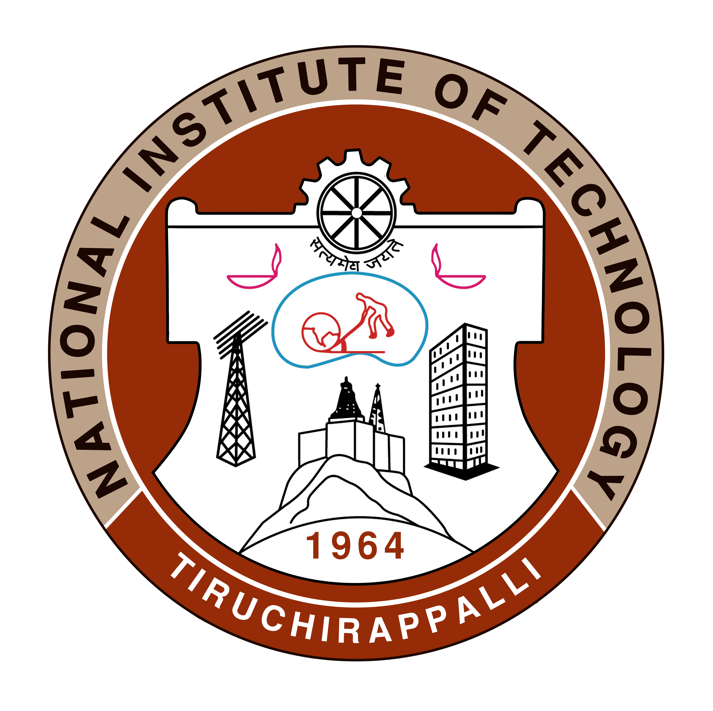

Publications
Fast and efficient look-ups via data-driven fib designs
, Aditi Partap*, Ammar Tahir* (* = Equal Contribution)
FIRA@SIGCOMM'22 | ACM SIGCOMM Workshop on Future of Internet Routing & Addressing 2022
pdf
talk
cite
Data-Driven Network Path Simulation with iBox
, Shubham Tiwari, Nagarajan Natarajan, Venkata N. Padmanabhan, Sundararajan Sellamanickam
SIGMETRICS'22 | ACM SIGMETRICS / IFIP PERFORMANCE 2022
pdf
talk
cite
Leveraging Service Meshes as a New Network Layer
, P. Brighten Godfrey, and Radhika Mittal
HotNets'21 | HotNets 2021: Twentieth ACM Workshop on Hot Topics in Networks
pdf
talk
cite
iBox: Internet in a Box
, Sai Surya Duvvuri, Nagarajan Natarajan, Venkat Padmanabhan, Sundararajan Sellamanickam, and Johannes Gehrke
HotNets'20 | HotNets 2020: Nineteenth ACM Workshop on Hot Topics in Networks
pdf
talk
cite
website
repo
Reinforcement Learning for Bandwidth Estimation and Congestion Control in Real-Time Communications
Joyce Fang, Martin Ellis, Bin Li, Siyao Liu, Yasaman Hosseinkashi, Michael Revow, Albert Sadovnikov, Ziyuan Liu, Peng Cheng, , David Zhao, Ross Cutler, Yan Lu, and Johannes Gehrke
MLForSystems'19 | Workshop on ML For Systems at NeurIPS
pdf
cite
Talks
Leveraging Service Meshes as a New Network Layer
Talk on how service meshes unlock new cross-layer opportunities in microservices
HotNets'21, Virtual Event
video
deck
Internet in a Box: Enabling Data-Driven Network Simulation
Talk on how to generate realistic network simulations for performance prediction
HotNets'20, Virtual Event
video
deck
Writing
